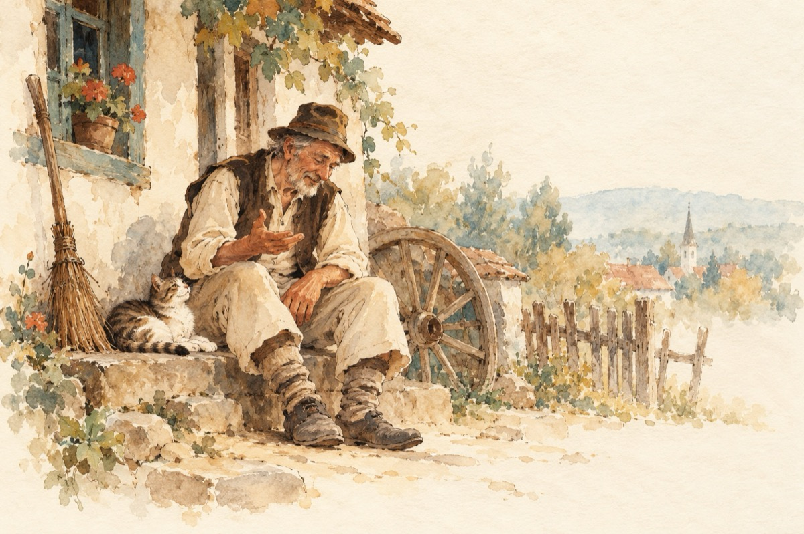

Proasta satului
Soția prostului din sat
Pe Ion s-a supărat
Că de la o vreme-ncoace
Pisicii mereu îi toarce.
–Ia și mătură ograda
Stai precum prostul degeaba?
Pune roată la căruță,
Și nu mai toarce la mâță!
Ăștia a lui Măstăcan
Spun în sat că ești motan
Ei nu știu în casă rostul
Că de fapt o faci pe prostul!
O faci pe prostul la treabă
Când mă vezi pe mine-n grabă
Dar eu nu spun nimănui
Că io-s proasta satului!
Câte țin la casa mea
Pe postul de muhaia.
Eu cu tine sunt drăguță,
Ca răspuns tu torci la mâță.
Și-uite-asa te fofilesti
Și de muncă nu-ți găsești.
Ai văzut, ne plouă-n casă
Dar ție că nici nu îți pasă!
Tu în loc să mă iubești
Spui la pisică povești
Așa ai făcut tot anul
Parcă tu i-ai fi motanul.
Nu cumva tu te gândești
Să prinzi la pisică șoareci?
Iar pe mine ca soție
Să mă ții de fantezie!
Atâta ți-a mai rămas
Să-mi radă sătenii-n nas
Că pe mine m-ai lăsat
Și te-ai dus la alta-n sat.
Și nu ar fi de mirare
O asemenea mișcare
Eu țin la toate rostul
Iară tu o faci pe prostul.
Și eu nu spun nimănui
Că sunt proasta satului.
Ăștia a lui Măstăcan
Nu degeaba-ți spun motan
Umblii-n sat după pisici
La Catrina, hei ce zici?
Dimineață te întorci
Toată noaptea stai și-i torci.
Acasă-a ta soțioară
Acoperișu-l repară
Degeaba ai casă nouă
Dacă, prin acoperiș plouă.
Soția prostului din sat
Pe Ion ea l-a iertat,
Că de la o vreme-n coace
La pisica nu-i mai toarce!...
Sunt sus pe acoperiș,
El motan și ea pisică,
Iubindu-se pe furiș
Fără teamă, fără frică;
În casă nu le mai plouă
Și-au acum o viață nouă!
Vasile Groza